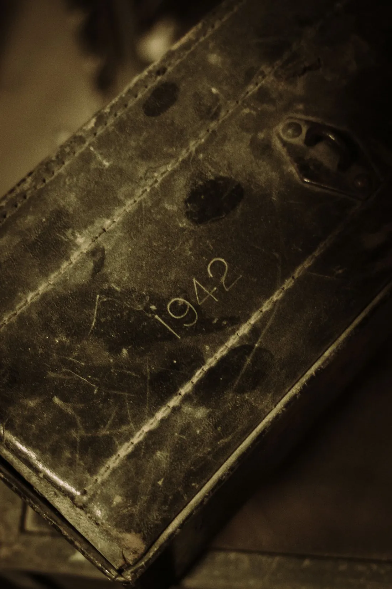
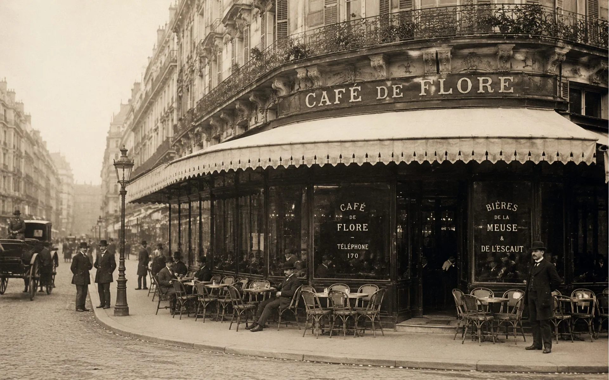
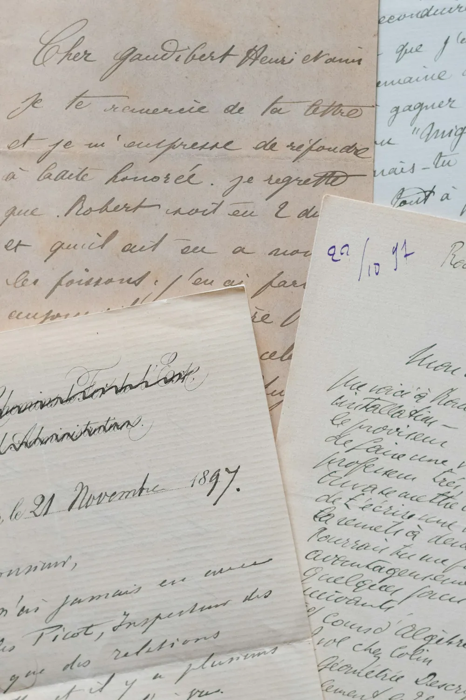
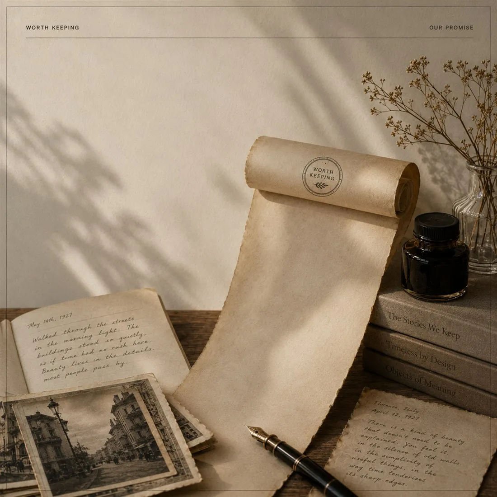

Worth Keeping
SOME THINGS ARE
too beautiful, too thoughtful,
or too important to disappear.
A COLLECTION OF WHAT DESERVES TO LAST.
What
deserves
to last?
Not everything deserves a place in our memory.
Some things earn it.
Some things are worth keeping.
THE ONES THAT LEAVE SOMETHING BEHIND.

QUESTION No. 03
✦
What's something small that changed everything?

FIVE WAYS TO NOTICE
The Collection

THE RECORD
The Journal
Every piece, set in the year its history happened - the whole archive in order, from 1652 to now.
OPEN THE JOURNALABOUT
Why Worth Keeping?
We believe that in a world that moves too fast, the most meaningful things are often the ones we almost lose.
Worth Keeping exists to slow down, to look closer, and to preserve the stories, places, ideas and objects that continue to shape how we live.
READ OUR STORYOUR PURPOSE
To Notice.
To Remember.
To Preserve.
We curate with care and share only what we truly believe deserves to be remembered.
WHAT WE SHARE
OUR PROMISE
Thoughtful.
Timeless.
Never Noise.
No clickbait. No filler. Just meaningful content, made to be read, saved and shared for years to come.

Begin.
THERE IS SO MUCH WORTH KEEPING.
Stories. Places. Design. Craft. Small reminders of what makes life richer, deeper, and more meaningful.
Stay curious. Stay kind. Stay attentive.
The best things are often the quietest.